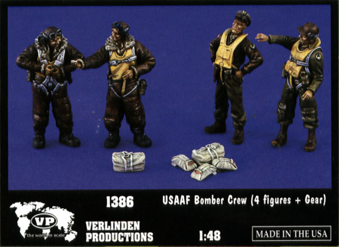
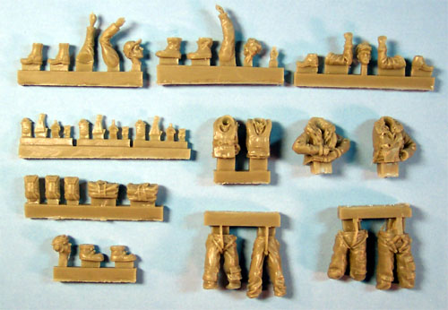
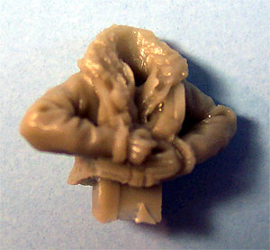
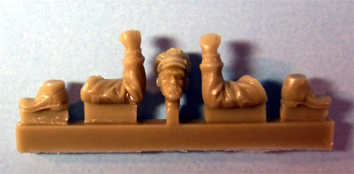

Verlinden #1386 USAAF Bomber Crew
MSRP $17.95 USD
Images and text Copyright � 2003 by Matt Swan

Model airplanes are all well and good but sometimes you need to have a few of those accessory items to dress up the setting. I realize that some kits include figures but those particular items get so familiar, I mean the few that are out there show up everywhere. I like to see something a little different. With that in mind I recently acquired a Verlinden Bomber Crew set. Now paying 18 bucks for four figures does indeed hurt a little, especially when you can get a complete model for that price in a lot of places. And getting that little box doesn�t do much to improve the feeling.
Upon opening the box and taking a look at what I had purchased those feeling dissipated and the ache in my wallet faded. This is a very nice little kit of figures, and I say kit in the truest sense of the word. This package includes eleven resin casting sprues comprising forty-three pieces. That is certainly enough pieces to qualify it as a kit, wouldn�t you say? We have a selection of body parts to construct four bomber crewmembers plus equipment. We mustn�t forget the equipment. There are three parachute packs, two duffle bags and an assortment of smaller items such as side arms and oxygen masks. This is going to provide for a lot of creativity from the modeler.
Looking at the parts individually we can see a lot of very nice detail. There are individual expressions on the faces, the fur collars on the flight jackets looks like fur, shirt collars can be seen peaking out from the front of a jacket and all the various straps are sharply defined. I found very little flash on the sprues and upon close examination of the parts, could not find a single micro-bubble or casting imperfection. Wow, a real nice set of figures.
I can see how these figures will be a great addition to any diorama setting and could benefit any bomber aircraft model. The equipment pieces will make a nice addition also to be placed in strategic locations on an airfield or just inside the hatch of an aircraft. These figures would probably work well with a 1/48 scale Willis Jeep or other airfield equipment also.


